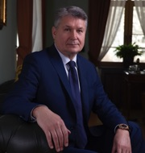
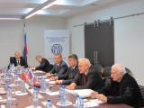

Анатолий Николаевич, Ваша деятельность на протяжении многих лет связана с вопросом развития международного бизнеса в различных регионах планеты. С чем связан Ваш интерес именно к международным направлением?
- Я думаю, что любая эффективная деятельность, относящаяся к решению масштабных вопросов развития тех или иных направлений бизнеса, не позволяет локализовать свои интересы в рамках одного государства. Так или иначе, приходится встречаться с партнерами из других стран в рамках привлечения наиболее эффективных технологий, финансовых инструментов или поиска рынков сбыта. Поэтому развитие международных связей это не самоцель, а скорее надежный и эффективный механизм развития современного бизнеса. Мой интерес в том, чтобы всесторонне развивать отдельные направления бизнеса.
Какие страны и регионы Вы считаете наиболее актуальными для развития бизнеса сегодня в условиях затяжной международной нестабильности?
- Часто кризис, с одной стороны, позволяет экономике очиститься от наиболее неэффективных надстроек, а с другой подчеркнуть привлекательность эффективных структуру. Поэтому бизнес в эпоху глобального кризиса является постоянным поиском – ни в одной стране, даже самой успешной, не может быть все абсолютно хорошо или все абсолютно плохо. Важно найти тот сегмент, который имеет потенциал роста и развития, а после правильно отыскать этот самый механизм развития, привлекая зарубежных партнеров. Поэтому в эпоху нестабильности любая страна может быть интересна для реализации тех или иных проектов.
В последнее время МКПП неоднократно заявляло о том, что заинтересовано в развитии европейского направления в своей деятельности. Как вы оцениваете подобную перспективу?
 - Изначально Конгресс создавался в качестве инструмента, позволяющего молодым экономикам целого ряда стран интегрироваться в глобальную финансовую систему. На сегодняшний день эта задача выполнена, в том числе и при участии МКПП, но интерес с различных сторон к Конгрессу сохранился. Это связано с тем, что мировая финансовая система сегодня испытывает серьезную турбулентность. В этих условиях МКПП важен в качестве независимой международной структуры, лишенной политического подтекста, позволяющей бизнес-структурам вести содержательный диалог между собой и осуществлять реализацию различных проектов силами бизнес-сообществ нескольких стран. Поэтому основное направление у Конгресса одно – объединяя деловые круги формировать благоприятный деловой климат, позволяющий вести эффективный бизнес, опираясь на партнеров по всему миру.